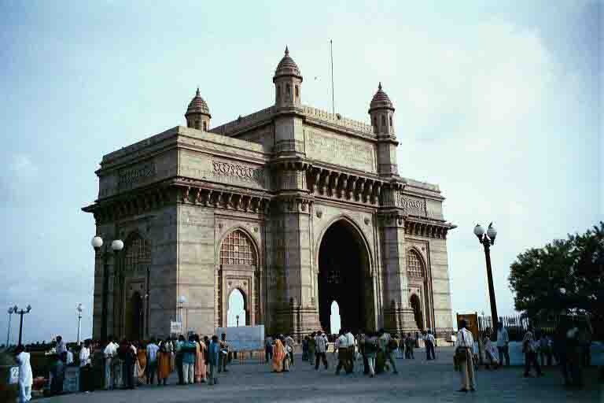
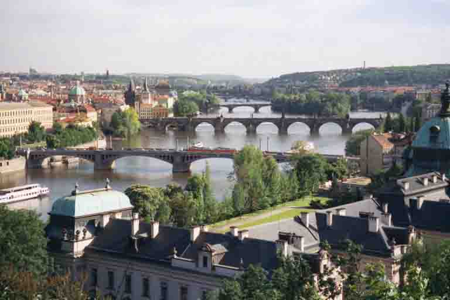

Homeward Bound
Prague, Czech Republic
After a final week in Goa we were flying west towards Poland. Thirteen months away and we were on our back to Europe – can you believe that? We always knew that leaving India was going to be hard, however long we stayed, as both of us had really fallen for it. Our last day was spent busily buying all the books Sue wanted in Bombay and also trying to keep our minds off of the flight that night. One hour to go before our taxi was due to arrive and we decided to take a final stroll along the Strand to the Gateway of India. Somehow, after having managed to avoid the frequent potholes for the last three months, Sue succumbed to one and from her ankle came a rather loud cracking sound. We weren´t sure whether it was broken or not so this thought occupied our minds all the way to the airport. It wasn´t until take-off that the thought finally hit us – after all of the wonderful places we´ve visited, people we´ve met and experiences we´ve had we were beginning our journey home.
When we left England last year we hadn´t planned to return via Europe but as the year drew to a close we were clutching at ideas to extend our trip just a little longer. It was getting too hot to stay on in India and there were friends on the continent that we hadn´t seen in a while so a plan was formed.
Our first stop was Krakow in Poland, a beautiful city with plenty to see, but nonetheless rather a culture shock after India. You could walk down the street without complete strangers wanting to know who you were, where you´d been and where you were going. For some people this may come as a welcome relief, but not for the two of us. People didn´t smile much, the service was awful and worst of all, they didn´t put lashings of spice on your food! We had never come across a dumpling in the whole of our trip and here they filled your plate with piles of these lardy tasteless things! Don´t get me wrong, we did enjoy our few days here and we would recommend Krakow, but it was really hard not to miss India.
We visited Auschwitz from Krakow. It´s one of those places like the Killing Fields in Cambodia and the Hiroshima Memorial in Japan that might seem like odd things to want to visit while on holiday, but where we somehow felt it was important to go to. Auschwitz I is where the museum is housed and a twenty minute walk from there is Birkenau, a far bigger camp left in the same condition as it was found when the Russians liberated it in 1945. We walked around the wooden ´living quarters´ which were open so that you could look inside. These places said so much more than any of the exhibits in the museum could. The presence was very strong, I´m not talking about ghosts or anything like that, just a feeling that sent a chill through you and made you feel inclined to stand in the doorway and not enter any further. Maybe it was something about the day too. When you see movies about the holocaust it is always grey and cold, but on this day the sky was blue, the birds were singing and all around us was green. The people imprisoned here must have seen days like this and somehow this seemed to heighten the tragedy further.
From Krakow we travelled by overnight train to Prague in the Czech Republic, another classical European city. We were joined for a few days by our friend Kerstin and together we just about walked the soles of our feet off! Prague is just mile upon mile of fantastic buildings, lovely parks and good coffee houses. I must say that this is something we had missed about Europe – the café culture – and we really did make the most of it here, stopping every couple of hours to sit in the sunshine, sup café lattes, stuff our faces with cake and bore Kerstin with our tales of Asia! This wasn´t our first visit to Prague, we´d been a few years before, and so there was also that nice feeling you get when returning to a familiar place and rediscovering some favourite haunts. Prague would be a difficult place to bore of I think - at night, when you see the castle and the cathedral illuminated on the opposite bank of the Vltava River it looks just like a fairytale land, the Tynn Church on the Old Town Square looks like the Disney Castle and the houses with both painted and sculptural signs are all simply works of art.
Prague took us closer to England. Still no drizzle or ´leaves on the line´, but closer nonetheless. It really hit home when we turned on Sky News and learned of a traffic jam on the B359 in Whitby. The TV got turned off rather rapidly and we looked at each other and said, ´Can we go back to India now?´
When we left England last year we hadn´t planned to return via Europe but as the year drew to a close we were clutching at ideas to extend our trip just a little longer. It was getting too hot to stay on in India and there were friends on the continent that we hadn´t seen in a while so a plan was formed.
Our first stop was Krakow in Poland, a beautiful city with plenty to see, but nonetheless rather a culture shock after India. You could walk down the street without complete strangers wanting to know who you were, where you´d been and where you were going. For some people this may come as a welcome relief, but not for the two of us. People didn´t smile much, the service was awful and worst of all, they didn´t put lashings of spice on your food! We had never come across a dumpling in the whole of our trip and here they filled your plate with piles of these lardy tasteless things! Don´t get me wrong, we did enjoy our few days here and we would recommend Krakow, but it was really hard not to miss India.
We visited Auschwitz from Krakow. It´s one of those places like the Killing Fields in Cambodia and the Hiroshima Memorial in Japan that might seem like odd things to want to visit while on holiday, but where we somehow felt it was important to go to. Auschwitz I is where the museum is housed and a twenty minute walk from there is Birkenau, a far bigger camp left in the same condition as it was found when the Russians liberated it in 1945. We walked around the wooden ´living quarters´ which were open so that you could look inside. These places said so much more than any of the exhibits in the museum could. The presence was very strong, I´m not talking about ghosts or anything like that, just a feeling that sent a chill through you and made you feel inclined to stand in the doorway and not enter any further. Maybe it was something about the day too. When you see movies about the holocaust it is always grey and cold, but on this day the sky was blue, the birds were singing and all around us was green. The people imprisoned here must have seen days like this and somehow this seemed to heighten the tragedy further.
From Krakow we travelled by overnight train to Prague in the Czech Republic, another classical European city. We were joined for a few days by our friend Kerstin and together we just about walked the soles of our feet off! Prague is just mile upon mile of fantastic buildings, lovely parks and good coffee houses. I must say that this is something we had missed about Europe – the café culture – and we really did make the most of it here, stopping every couple of hours to sit in the sunshine, sup café lattes, stuff our faces with cake and bore Kerstin with our tales of Asia! This wasn´t our first visit to Prague, we´d been a few years before, and so there was also that nice feeling you get when returning to a familiar place and rediscovering some favourite haunts. Prague would be a difficult place to bore of I think - at night, when you see the castle and the cathedral illuminated on the opposite bank of the Vltava River it looks just like a fairytale land, the Tynn Church on the Old Town Square looks like the Disney Castle and the houses with both painted and sculptural signs are all simply works of art.
Prague took us closer to England. Still no drizzle or ´leaves on the line´, but closer nonetheless. It really hit home when we turned on Sky News and learned of a traffic jam on the B359 in Whitby. The TV got turned off rather rapidly and we looked at each other and said, ´Can we go back to India now?´

At a sugarcane vendor on our last day in Bombay

The Gateway of India, where Sue fell down a pothole!

View of Prague and the Vlatva River